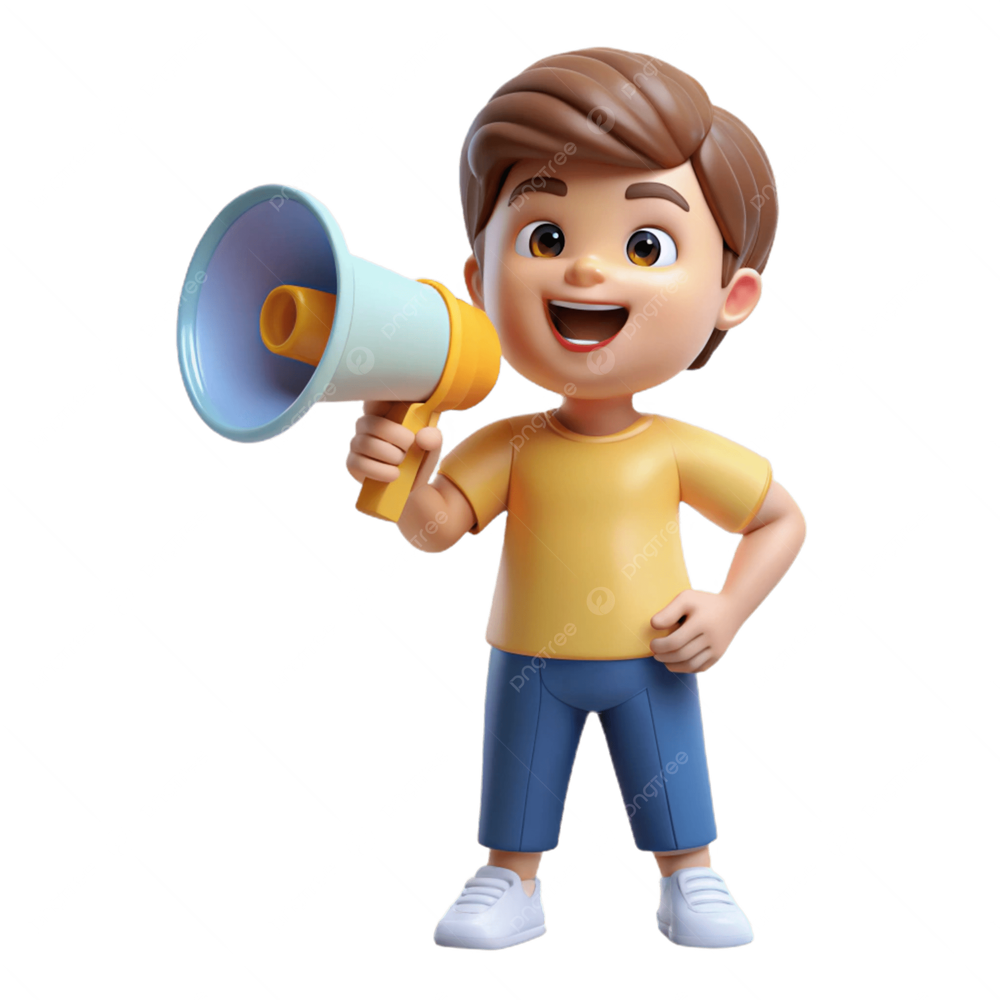

Sesión 1:
En esta sesión haremos una presentación de la SdA, comprobaremos nuestros conocimientos previos (juego V/F) y veremos que productos tendremos que elaborar
Sesión 2:
La primero que haremos será la distribución de grupos y la distribución de roles. Comenzaremos la investigación previa a la realización de la infografía durante el tiempo que nos quede de sesión
Sesión 3:
Durante esta sesión debéis finalizar el proceso de investigación y comenzamos la elaboración de la infografía.
Sesión 4:
En esta sesión debéis seguir con la elaboración de la infografía.

Durante esta sesión debéis acabar la infografía y entregarla en la tarea abierta en Aulas Virtuales.
Sesión 6:
Durante esta sesión, comenzareis con la redacción del guion del podcast.
Sesión 7:
En esta sesión, acabaréis la redacción del guion del podcast y podéis ir ensayando para la grabación posterior del mismo.
Sesión 8:
En esta sesión, grabaréis vuestros podcast y los entregareis a través de la tarea abierta en Aulas Virtuales.
Sesión 9:
En esta sesión, veremos todos juntos las infografías y escucharemos los podcasts de todos los grupos.